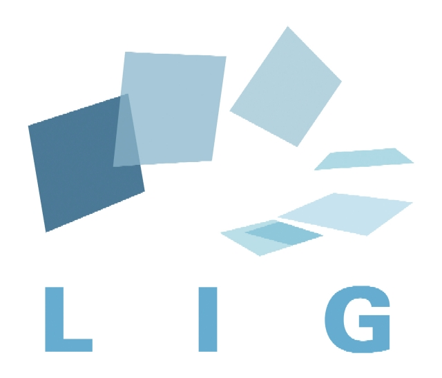
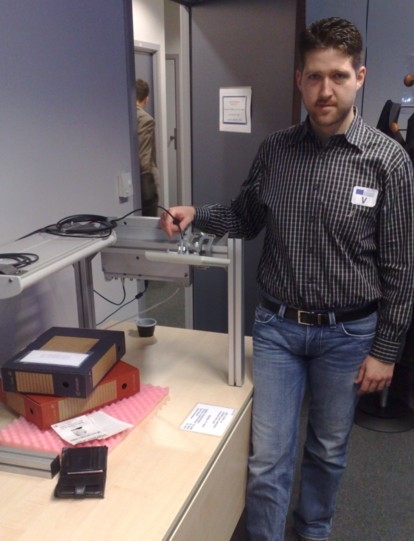
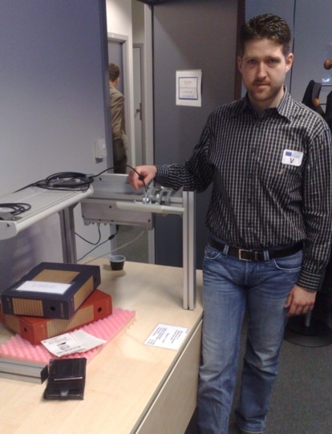

Aspire RFID is an open source project developed within the OW2 consortium. The contributions are initially funded by the
. This page lists all the contributors to the project.
us if someone is missing.
| | |
|---|
| | Athens Information Technology (AIT) has been recently founded with the vision of becoming a world class education and research centre. As a first step AIT signed an agreement with the Carnegie Mellon University (CMU) and the Information Networking Institute (INI) of Carnegie Mellon to set up and operate a joint Carnegie Mellon-AIT Master in Information Networking (MSIN) Program. AIT has strong relationships with the global IT and networking industry, as well as with the major IT and telecom industries in Greece. AIT is closely collaborating with the largest Greek IT and telecom industry (INTRACOM S.A), towards exploiting and disseminating research results. The Autonomic and Grid Computing Group of the AIT has up-to-date significant research contributions in several aspects of pervasive computing, which it intends to enhance through its participation in ASPIRE and AspireRfid projects. |
|  | Université Joseph Fourier - Grenoble 1 (UJF) is the initial contributor of the Aspire RFID open source middleware. UJF is one of Europe's leading universities. It offers its students high-quality education, providing them with a passport to the professional world. The Laboratory of Informatics of Grenoble (LIG) is a research unit whose funding partners are CNRS, INRIA, Grenoble INP, UJF and UPMF. It was created on January 1, 2007. It gathers 500 researchers, lecturers-researchers, students and postdocs, technical and administrative staff members. Research activities are structured around 24 research groups. |
| | INRIA, the French national institute for research in computer science and control, operating under the dual authority of the Ministry of Research and the Ministry of Industry, is dedicated to fundamental and applied research in information and communication science and technology (ICST). The Institute also plays a major role in technology transfer by fostering training through research, diffusion of scientific and technical information, development, as well as providing expert advice and participating in international programs. INRIA maintains important international relations and exchanges. In Europe, INRIA is a member of ERCIM which brings together research institutes from 19 European countries. INRIA is a partner in about 120 FP6 actions and 40 FP7 actions, mainly in the ICST field. INRIA also collaborates with numerous scientific and academic institutions abroad (joint laboratories such as LIAMA, associated research teams, training and internship programs). |
| Module | Lead Institution | Design Lead | Implementation Lead |
|---|
| AspireRFID Architecture | AIT, SENSAP, UJF, INRIA, AAU | Nikos Kefalakis, John Soldatos, Panos Dimitropoulos,Didier Donsez, ... | |
| TDT |
| Tag Data Translation | Fosstrak | | |
| Extended Tag Data Translation | INRIA | Lei Zhang, Loic Schmidt | Lei Zhang, Loic Schmidt |
| Hardware Abstraction Layer |
| LLRP Interface | AIT | Nikos Kefalakis | Nikos Kefalakis |
| Intermec BRI Interface | AIT | Nikos Kefalakis, Nektarios Leondiadis | Nikos Kefalakis, Nektarios Leondiadis |
| Reader Proxies | | | |
| Reader Core | Fosstrak | | |
| Reader Core OSGI Deployment | AIT | Nektarios Leondiadis | Nektarios Leondiadis |
| Embedded light RP | INRIA | Roudy Dagher | Roudy Dagher |
| F&C Server (ALE) | |
| F&C Server (ALE)Core | Fosstrak | | |
| Extended TDT ALE | INRIA | Lei Zhang | Lei Zhang |
| Deploy F&C on OSGi | UJF | | |
| Embedded ALE | INRIA | Roudy Dagher | Roudy Dagher |
| Business Event Generator | AIT | Nikos Kefalakis | Nikos Kefalakis |
| Adaptive color based RFID reader Anti-collision | INRIA | Nathalie Mitton | Nathalie Mitton |
| EPCIS Repository |
| EPCIS Repository Core | Fosstrak | | |
| Master Data Capture I/F | AIT | Nikos Kefalakis | Nikos Kefalakis |
| Connector | AIT | Nektarios Leondiadis, Nikos Kefalakis, John Soldatos | Nektarios Leondiadis, Nikos Kefalakis |
| Programmable Engine | AIT | Nikos Kefalakis | Nikos Kefalakis |
| APDL | AIT | Nikos Kefalakis | Nikos Kefalakis |
| AspireRfid IDE |
| AspireRfidIDE Core | AIT | Nikos Kefalakis | Nikos Kefalakis |
| ALE Server Configurator | AIT | Vaso Koleti, Nikos Kefalakis, Nektarios Leondiadis | Vaso Koleti, Nikos Kefalakis |
| Business Event Generator Configurator | AIT | Nikos Kefalakis | Nikos Kefalakis |
| Physical Reader Configurator | AIT | Nektarios Leondiadis | Nektarios Leondiadis |
| EC-Spec Editor | AIT | Vaso Koleti, Nikos Kefalakis | Vaso Koleti, Nikos Kefalakis |
| LR-Spec Editor | AIT | Vaso Koleti, Nikos Kefalakis | Vaso Koleti, Nikos Kefalakis |
| Master Data Editor | AIT | Efstathios Mertikas, Nikos Kefalakis | Efstathios Mertikas, Nikos Kefalakis |
| Business Loc. GMF Editor | AIT | Eleftherios Karageorgiou, Nikolaos Kefalakis | Eleftherios Karageorgiou |
| TCP Message Capturer | AIT | Nikos Kefalakis | Nikos Kefalakis |
| BPWM Editor | AIT | Nikos Kefalakis, Yongming Luo, Eleftherios Karageorgiou | Yongming Luo, Eleftherios Karageorgiou |
| Prog. Engine Configurator | AIT | Nikos Kefalakis | Nikos Kefalakis |
| Connector Configurator | - | - | |
| Privacy Framework Tool | AAU, OSI | | |
| OSGi Bundles |
| ProximaRF Desktop USB reader | UJF | | |
| TagSys Medio Serial reader | UJF | | |
| ACR 122 USB reader | UJF | | |
| OneWire reader | UJF | | |
| Phidget RFID Reader | UJF | | |
| Standalone Tools |
| Business Intelligent Tool | AIT | to be committed | to be committed |
| Automatic RFID Reader Configuration & Management | AIT | Nikolaos Kefalakis, Georgios Katsis | Georgios Katsis |
| Light ALECC | INRIA | Lei Zhang | Lei Zhang |
| Standalone Testing Tools |
| Tag Generator | INRIA | Roudy Daghe | Roudy Daghe |
| Tag Searcher | INRIA | Roudy Daghe | Roudy Daghe |
| TCP Message Capturer | Fosstrak | | |
| Demos |
| Simple F&C test with the Simulator Reader device | AIT | Nikos Kefalakis | |
| Warehouse Packet Delivery (3 Tier Use) | AIT | Nikos Kefalakis | Nikos Kefalakis |
| Warehouse Packet Delivery (6 Tier Use) | AIT | Nikos Kefalakis | Nikos Kefalakis, Nektarios Leondiadis |
| Pick and Pack Demo | AIT | Nikolaos Konstantinou, Nikos Kefalakis | Nikolaos Konstantinou, Nikos Kefalakis |
| RFID management System | INRIA | Lei Zhang | Lei Zhang |
Walter, Didier and Kiev demonstrating AspireRFID @ La Fête de la Science 2008, Bastille de Grenoble, France
François demonstrating AspireRFID @ JavaOne 2009, San Francisco.
The AspireRFID logo was designed by Mrs. Mirto Nassiopoulou (AIT).
 PDF
PDF History
History Walter, Didier and Kiev demonstrating AspireRFID @ La Fête de la Science 2008, Bastille de Grenoble, France
Walter, Didier and Kiev demonstrating AspireRFID @ La Fête de la Science 2008, Bastille de Grenoble, France Nikos, Didier and John demonstrating AspireRFID @ Aspire Review Year 1, Brussels
Nikos, Didier and John demonstrating AspireRFID @ Aspire Review Year 1, Brussels
 François demonstrating AspireRFID @ JavaOne 2009, San Francisco.
François demonstrating AspireRFID @ JavaOne 2009, San Francisco.


{kind=link}
{kind=link}
{kind=link}
{kind=link}
{kind=link}
{kind=link}
{kind=link}